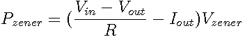

The simplest form of voltage regulator is a shunt regulator. This relies on the reverse breakdown voltage of a zener diode to provide a regulated voltage on the output. The resistor R1 limits current through the zener and to the load. Because current must flow through the zener to maintain regulation, this is a particularly inefficient regulator, particularly with a variable input voltage, and the Zener must be able to dissipate at least
 watts.